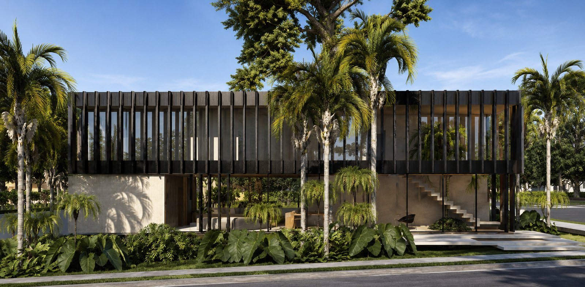
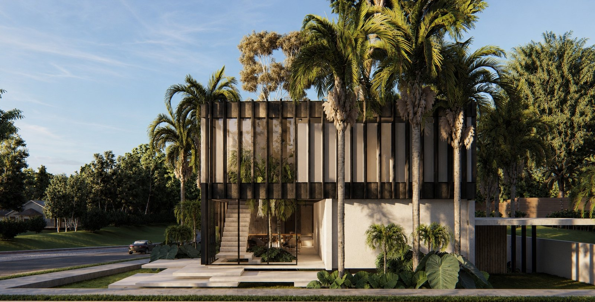
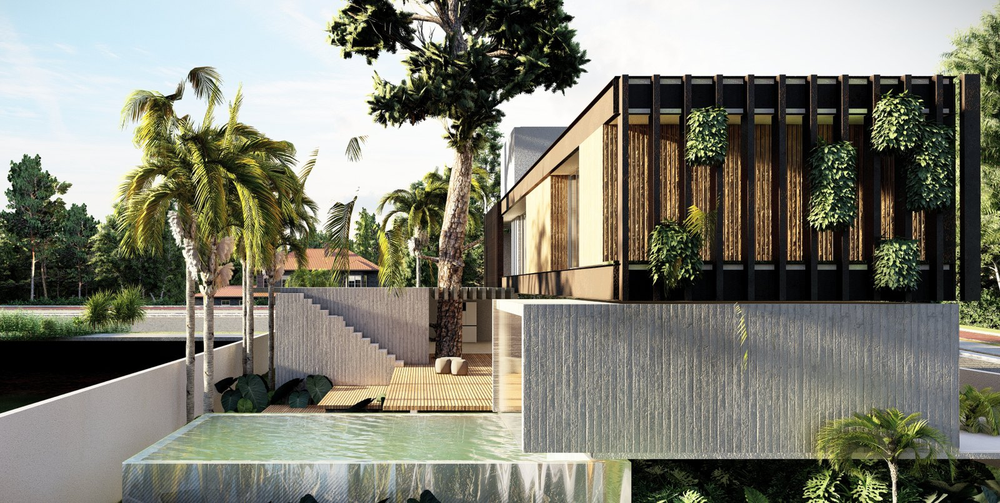
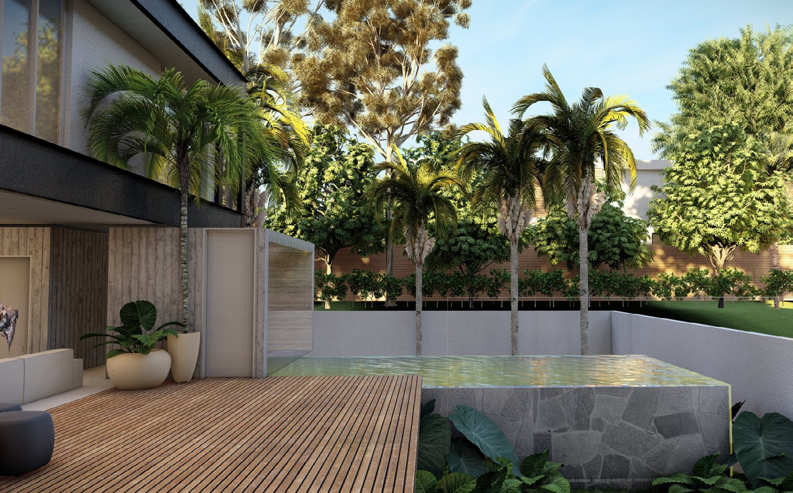
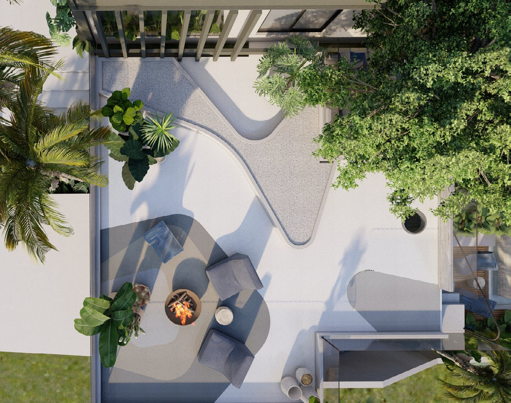
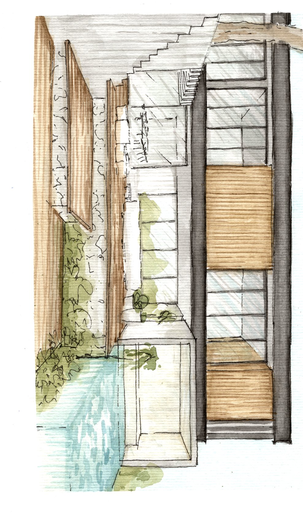
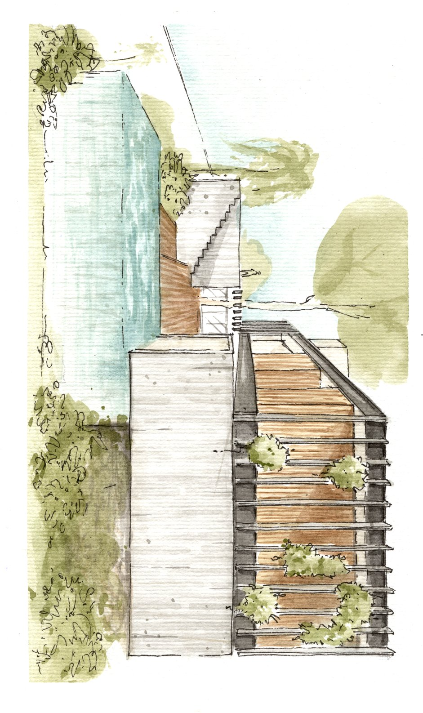
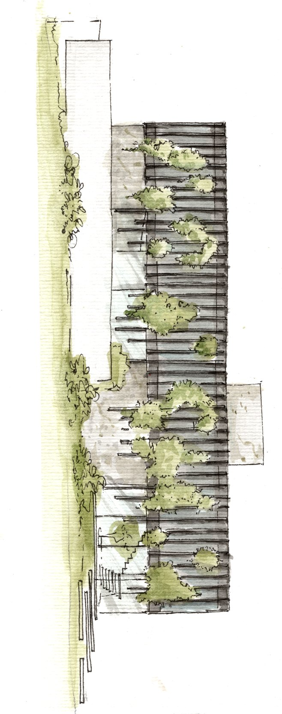
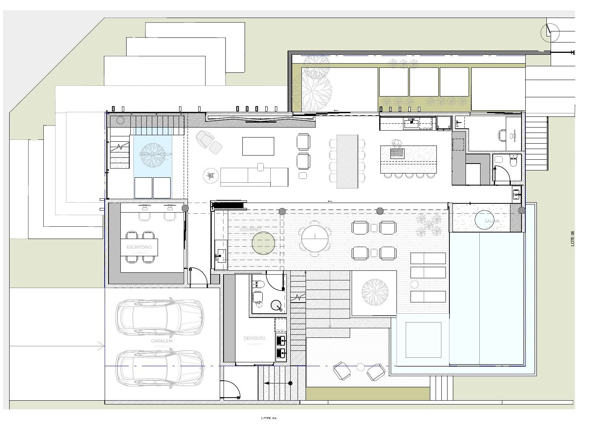
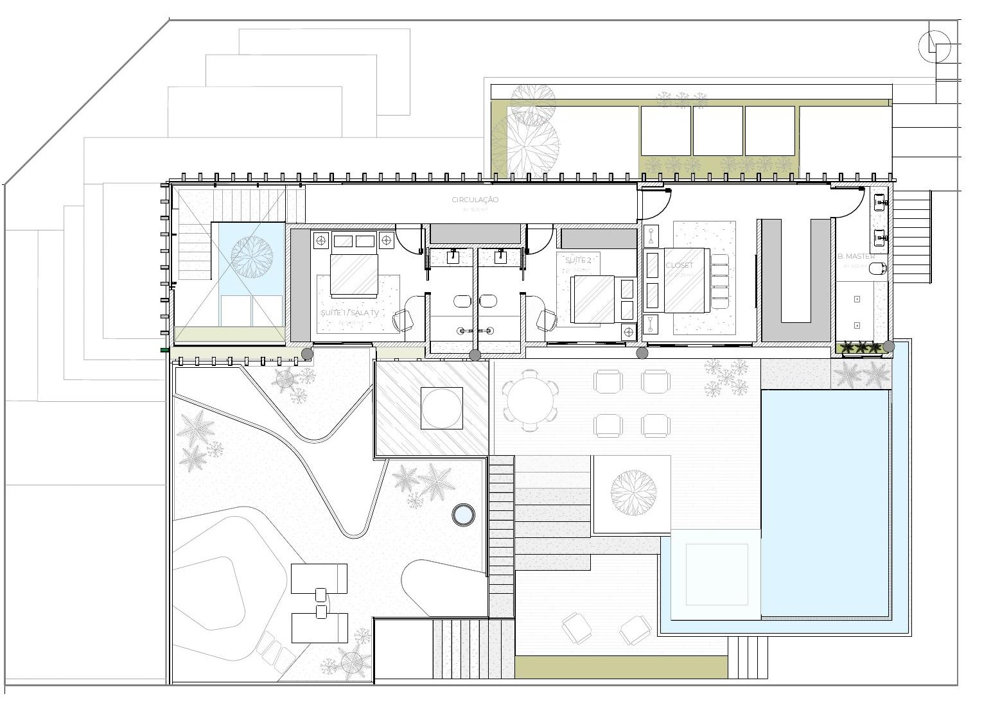

08
Casa Tau

Tau é o nome dado em alemão ao orvalho — as gotículas de água que se formam quando o vapor presente no ar se condensa em contato com superfícies mais frias.
A referência à vida noturna alemã vem de um casal festivo, receptivo e criativo, que busca na casa um ponto de encontro para amigos e abrigo para seus gatos, obras de arte e experimentações — distribuídos em uma casa de linhas retas, mas permeada por natureza.
A casa é ao mesmo tempo voyeur e exibicionista. Habitantes com poucos pudores, alguns fetiches e uma personalidade marcante, que reflete na forma de morar.
Em cada fio de grama, um espelho do céu.




Processo
Croquis em aquarela e plantas.




